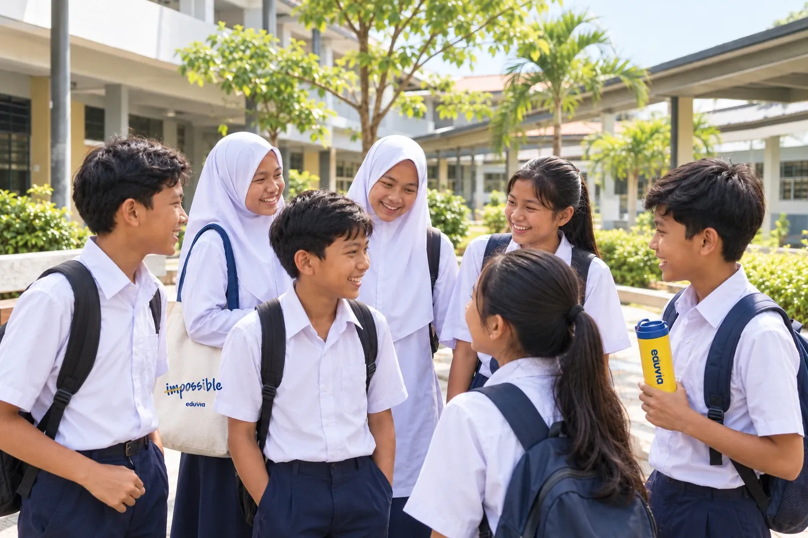

Bab 1 · Sistem Saraf Manusia
Nota Yang Jelas
Topik utama diterangkan dengan mudah, supaya pelajar boleh mengulang kaji sendiri.

Di Eduvia, Eco Grandeur, kami bantu pelajar dalam akademik berdasarkan silibus KPM (KSSR/KSSM). Kami juga bantu pelajar Membaca, Menulis, & Mengira (3M).
Pendekatan kami
Ujian diagnosis, ujian bulanan & kelas tuisyen untuk bantu pelajar progres ke arah yang betul.
1/2 + 1/4 = ?
Tekan satu jawapan Belum tepat. Cuba lagi! Betul! 1/2 + 1/4 = 3/4
Modul Eduvia
Modul kami disusun mengikut keperluan pelajar supaya pembelajaran lebih mudah didekati.
Topik utama diterangkan dengan mudah, supaya pelajar boleh mengulang kaji sendiri.
Penyelesaian langkah demi langkah untuk tunjuk pelajar cara dapatkan jawapan.
Latihan dalam Bahasa Melayu dan Bahasa Inggeris. Mesra DLP.
Contoh halaman daripada modul Sains Tingkatan 3 Eduvia.
Program
Kelas berdasarkan umur pelajar (Pelajar Darjah 1 dimasukkan ke 3M).
Membaca, Menulis dan Mengira (3M) dari awal, supaya anak bersedia ke sekolah.
Membina asas yang kukuh supaya pelajar dapat skor di ujian MPT4 pada Darjah 4.
Fokus kepada kefahaman konsep, bukan menghafal untuk sesuaikan dengan ujian baru pada 2027 iaitu MPTg3.
Persediaan SPM yang tersusun: kenal pasti bahagian yang lemah lebih awal, dengan teknik menjawab dan latihan Soalan Trial & Past Year.
Jadual 2027
Pilih umur anak anda untuk lihat masa kelas.
Yuran 2027
Pilih peringkat dan subjek untuk lihat bayaran bulan pertama dan yuran bulanan.
Soalan lazim
Dari 5 Tahun hingga Tingkatan 5: Asas 3M (5 Tahun, 6 Tahun & Darjah 1), Sekolah Rendah (Darjah 2 – 6), Menengah Rendah (Tingkatan 1 – 3) dan Menengah Atas & SPM (Tingkatan 4 – 5). Kelas berdasarkan umur pelajar dan mengikut silibus KPM (KSSR/KSSM).
Asas 3M: Membaca, Menulis & Mengira. Darjah 2 – 6: Bahasa Melayu, English, Mathematics dan Science. Tingkatan 1 – 3: subjek yang sama dan Sejarah. Tingkatan 4 – 5: Bahasa Melayu, English, Sejarah, Mathematics, Science, Add Maths dan Accounting.
Yuran bulanan bergantung pada peringkat dan bilangan subjek, bermula RM200 sebulan. Yuran pendaftaran tahunan RM300 (RM150 untuk Asas 3M) dibayar bersama bulan pertama. Guna Kira Yuran di bahagian Yuran untuk lihat jumlahnya.
Ada. Tekan Join Free Trial Class atau butang WhatsApp, dan kami akan aturkan kelas percubaan untuk anak anda.
Sesetengah kelas ada dua kumpulan, masing-masing dengan jadual sendiri. Untuk 5 Tahun – Darjah 1, Kumpulan A untuk pelajar baru mula & sangat lemah, dan Kumpulan B untuk pelajar lemah hingga sederhana. Pilih umur dan kumpulan di Jadual Kelas untuk lihat masa kelas.
Dengan tiga langkah: Uji, Semak, Bantu. Ujian diagnosis dan ujian bulanan tunjuk tahap sebenar anak. Kami semak bahagian yang Pandai dan yang Perlu Tingkatkan, termasuk puncanya: konsep, asas tahun sebelumnya atau pemahaman soalan. Kemudian kelas tuisyen dan latihan fokus kepada bahagian itu, dan kami uji semula.
Kami kongsikan keputusan ujian: bahagian yang Pandai, yang Perlu Tingkatkan dan langkah seterusnya, supaya kita boleh bantu anak bersama-sama. Bukan sekadar “kena banyakkan latihan”, tetapi latihan apa yang diperlukan dan kenapa.
Ya. Kelas Sekolah Rendah bina asas yang kukuh untuk ujian MPT4 pada Darjah 4. Kelas Menengah Rendah fokus kepada kefahaman konsep untuk ujian baru MPTg3 pada 2027. Tingkatan 4 – 5 pula buat persediaan SPM dengan teknik menjawab dan latihan Soalan Trial & Past Year.
Nota Mesra Pelajar Eduvia ada latihan dalam Bahasa Melayu dan Bahasa Inggeris, jadi mesra DLP, dengan nota yang jelas dan contoh jalan kerja yang mudah diikuti.
Di Eco Grandeur. Tekan butang WhatsApp untuk sebarang pertanyaan.